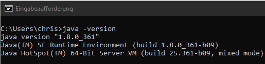
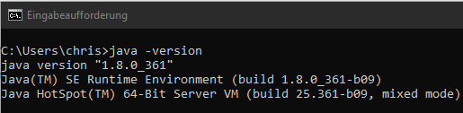
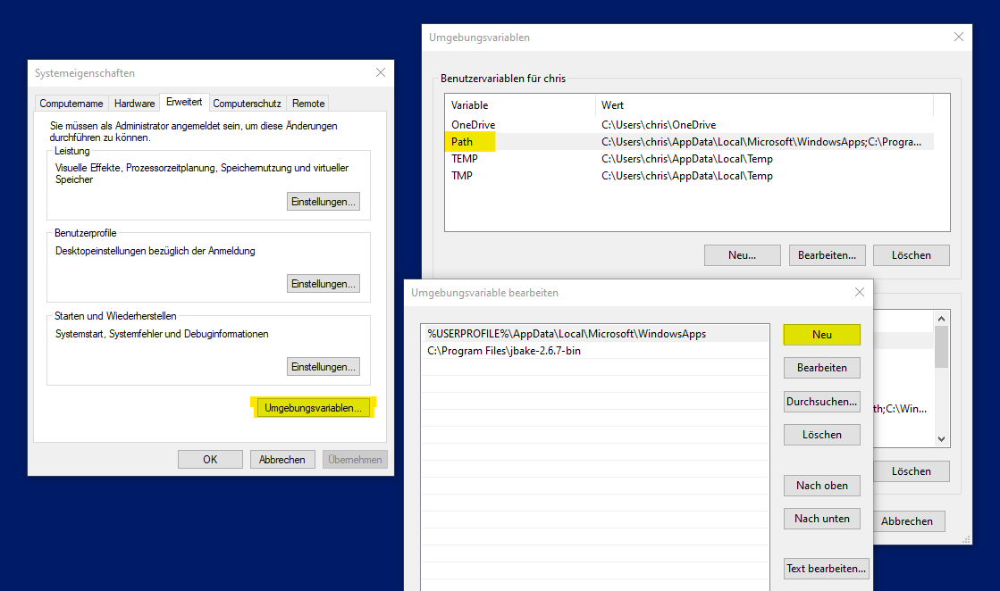
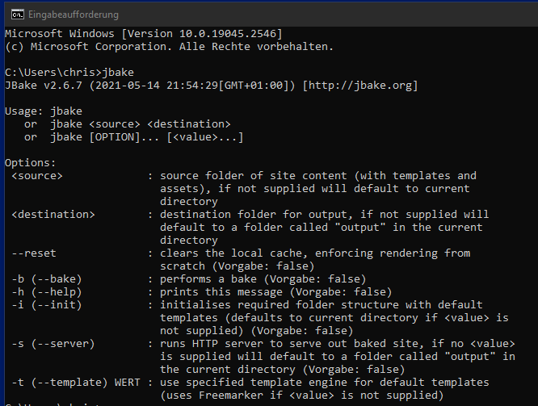
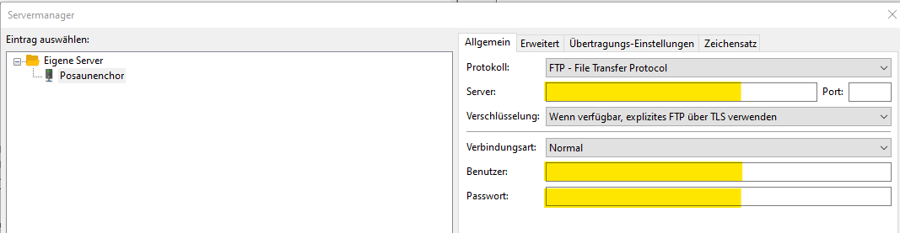
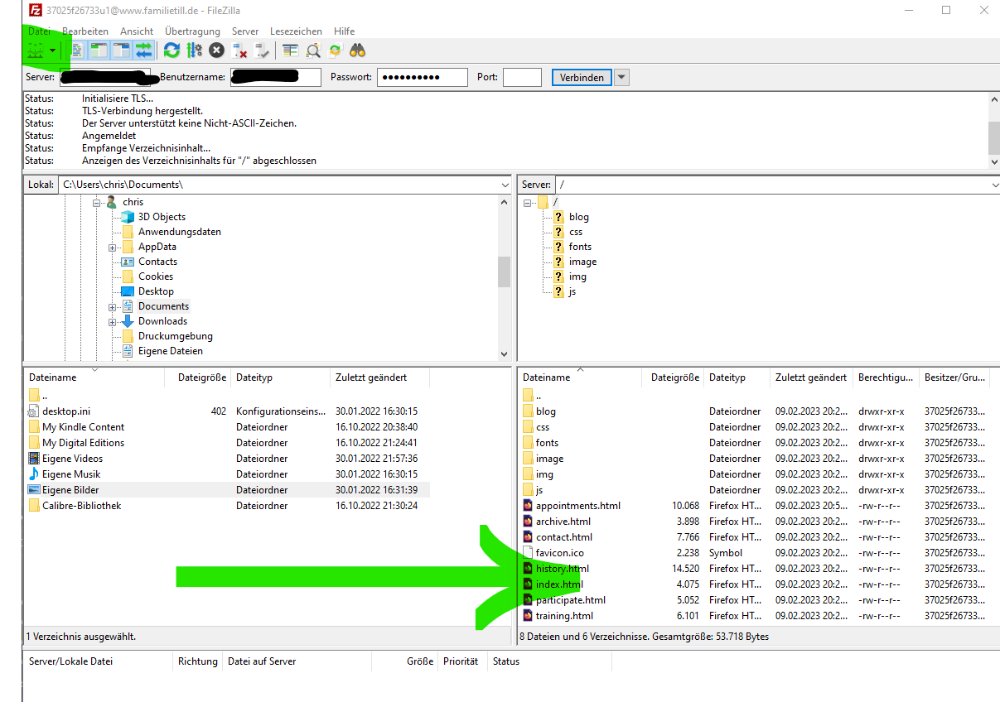

-
Wenn "java -version" kein Ergebnis anzeigt, muss ein Java Runtime Environment installiert werden.
-
Es kann für Windows bei www.java.com unter diesem Link heruntergeladen und danach installiert werden.
01 Februar 2023
JBake ist ein Generator statischer Webseiten. (Meine Notizen zu JBake)
| Windows | Linux |
|---|---|

|
Unter Linux ist in der Regel ein JRE vorhanden. Es kann, wenn notwendig mit "sudo apt-get install default-jre" (bei Debian basierten Distributionen) installiert werden. |
JBake wird einfach von hier heruntergeladen und in einem beliebigen Verzeichnis ausgepackt. Es ist komfortabel, den Pfad der JBake-Startdatei (Verzeichnis: bin) in den Umgebungsvariablen bekannt zu geben, um das Eintippen des Pfades in der Konsole zu vermeiden.
| Windows | Linux |
|---|---|

|
Unter Linux kann je nach Distribution und verwendeter Shell der Pfad des bin-Verzeichnisses mit einer Ergänzung in z.B. der Datei .bashrc exportiert werden. |
Danach kann in der Eingabeaufforderung oder einem Terminal überprüft werden, ob JBake ohne Angabe des Installationspfades gefunden wird.

Die Versionsverwaltungssoftware Git wird nicht zum Erstellen der Webseiten benötigt. Git verwaltet die Quelldateien (Asciidoc, Markdown, HTML) für uns in Repositories lokal und auf z.B. GitHub. Sie sind dort gesichert und stehen zur Änderung, Ergänzung und nachfolgender Verwendung mit JBake bereit.
| Windows | Linux |
|---|---|
Das Konsolenprogramm Git kann von dieser Adresse heruntergeladen und mit einem Doppelklick installiert werden. |
Unter Linux kann git, wenn notwendig mit "sudo apt-get install git" (bei Debian basierten Distributionen) installiert werden. |
Abschließend sollten noch folgende Konfigurationsbefehle ausgeführt werden, da Git sonst danach fragt und keine Befehle ausführt. In einer Konsole oder z.B. der "Windows Eingabeaufforderung" müssen die folgenden Befehle ausgeführt werden (das terminal (cmd oder Konsole kann in jedem beliebigen Verzeichnis des Rechners geöffnet werden.):
git config --global user.email "ftp@posaunenchor-urberach.de" git config --global user.name "Posaunenchor"
Die Emailadresse und der Benutzername sin nicht vorgegeben, dort sollte etwas sinnvolles und gültiges eingetragen werden.
Lässt man "--global" weg, gelten die Einträge nur für den gerade angemeldeten Benutzer. Das ist Geschmackssache.
Wir arbeiten nur im Hauptbranch (master oder main), deshalb werden Branches hier nicht weiter berücksichtigt!
Filezilla ist ein FTP-Programm, das zum Übertragen der fertig "gebackenen" Webseiten auf den Webserver verwendet wird.
| Windows | Linux |
|---|---|
Filezilla kann z.B. von dieser Adresse in einer portablen Variante heruntergeladen und mit Doppelklick installiert werden. |
Unter Linux kann filezilla, wenn notwendig mit "sudo apt-get install filezilla" (bei Debian basierten Distributionen) installiert werden. |
 |
Um einen Server einzurichten müssen nur die gelb hinterlegten Felder mit den bekannten Angaben ausgefüllt werden. |
FileZilla erklärt sich eigentlich selber. Server werden im Servermanager angelegt und dann oben links ausgewählt. Ist die Verbindung aufgebaut können unten links auf dem lokalen Rechner z.B. Dateien oder Verzeichnisses ausgewählt werden und dann mit einem rechten Mausklick und dem nachfolgenden Dialog auf den Server, der unten rechts angezeigt wird hochgeladen werden - fertig.
